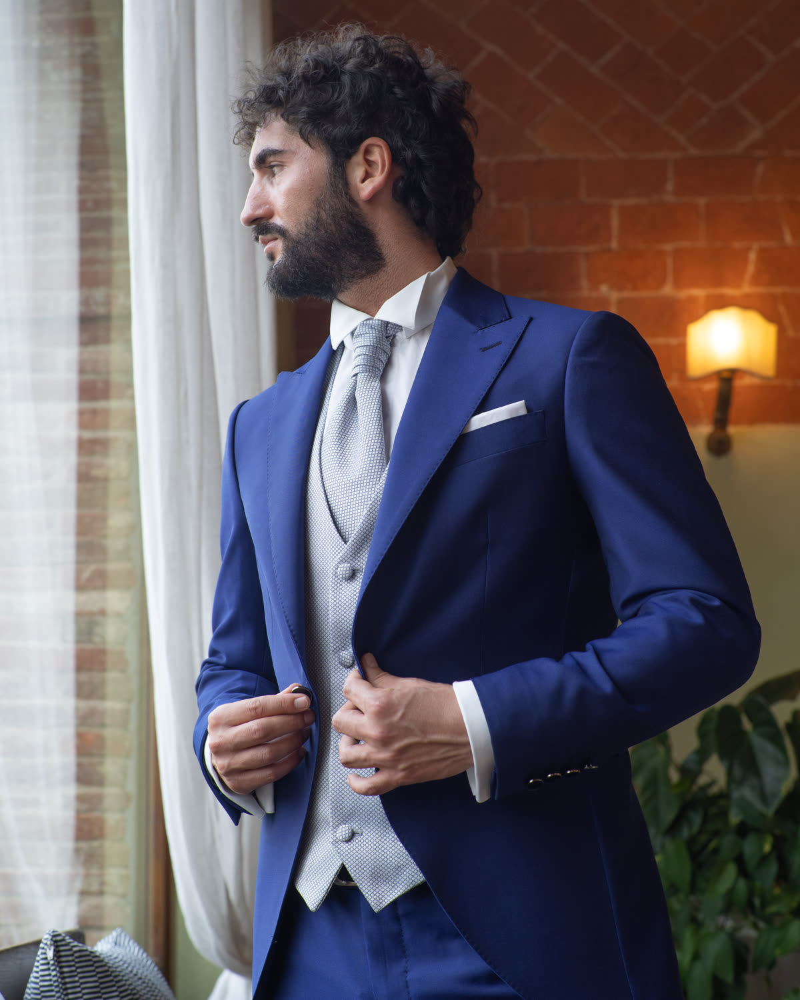
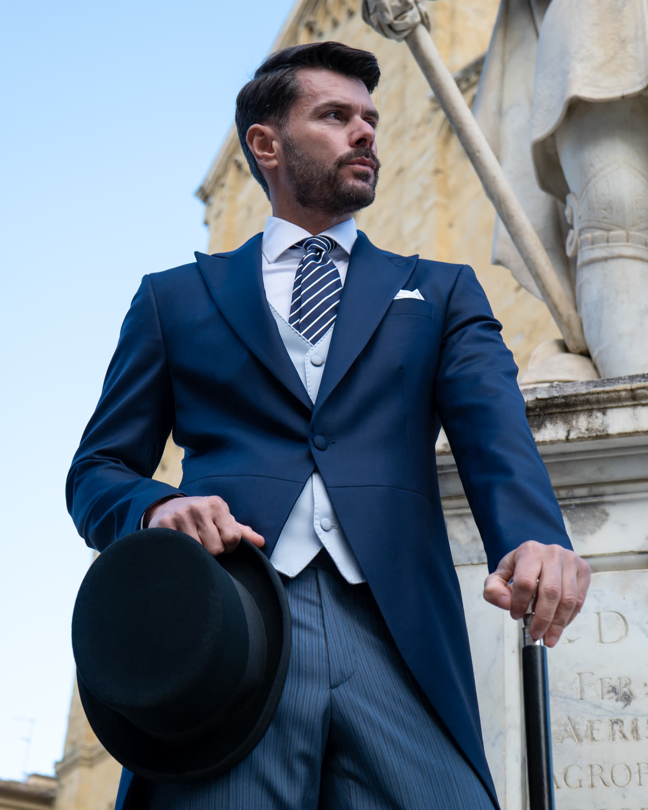
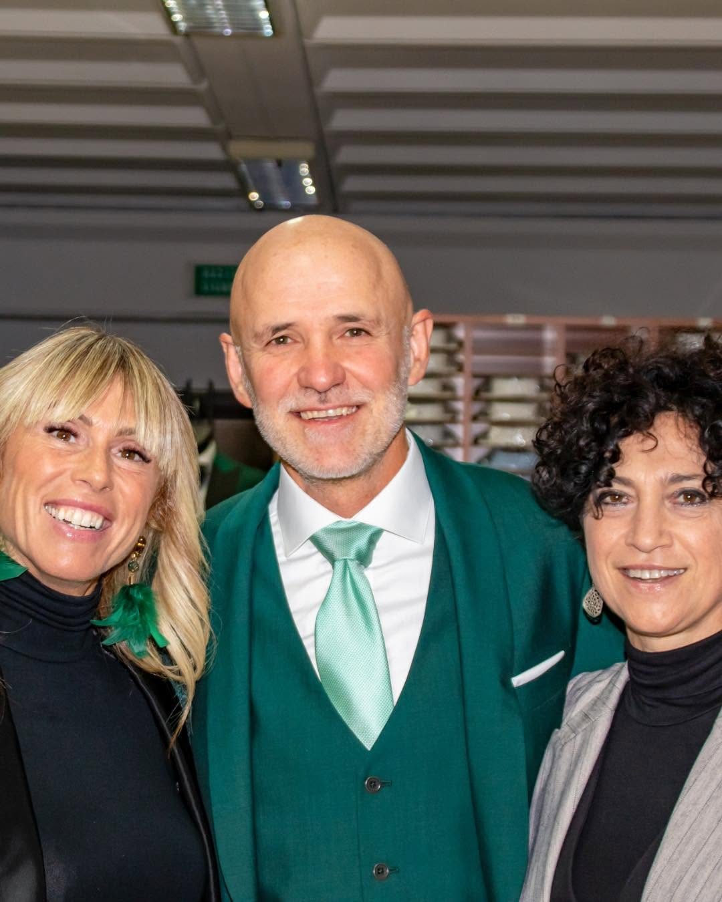
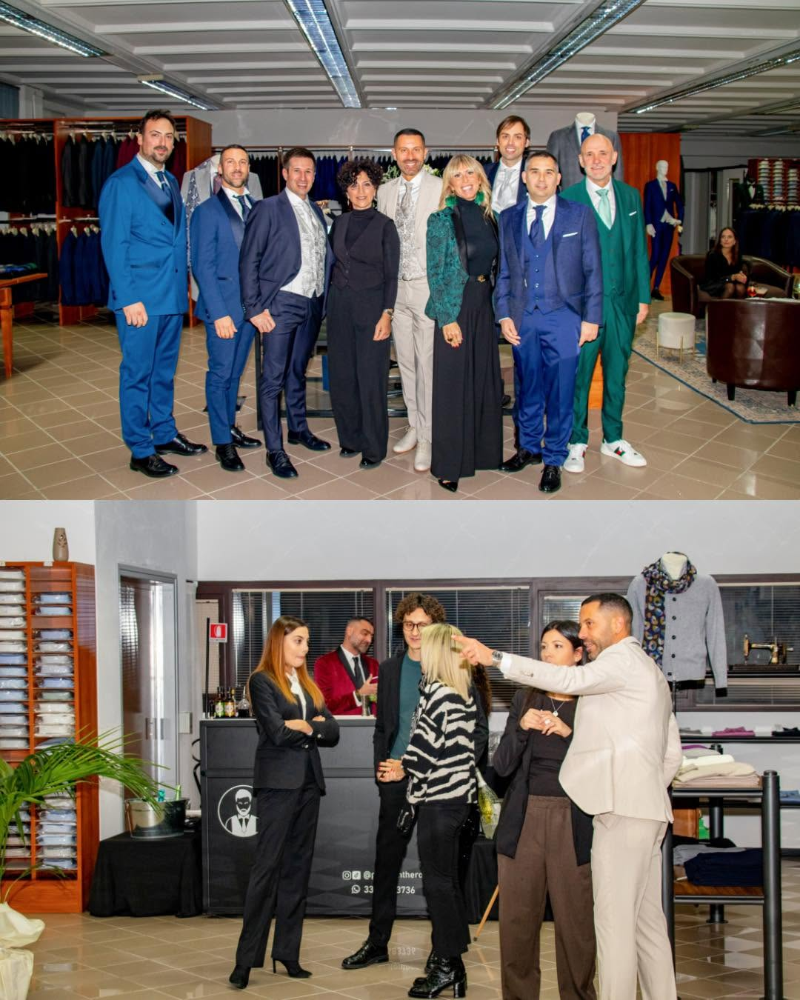
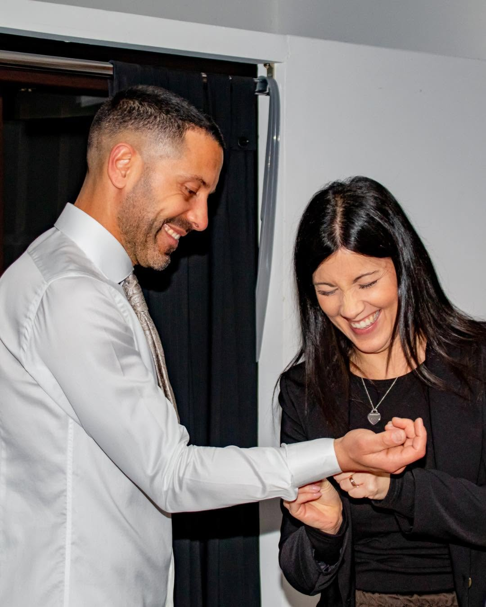

Domenica 25 ottobre 2026 · dalle 17:00 · Foiano della Chiana (AR)
Gala degli Sposi 2026 da Sartoria Semolini
Ti sposi nel 2027? Iscriviti e partecipa all'estrazione di un buono fino a 200€ sul tuo abito da cerimonia. E quest'anno, per la prima volta, ci sono anche gli abiti da sposa.
Ingresso libero e gratuito · Aperitivo offerto · Nessun obbligo di acquisto
Sartoria Semolini, Via I Maggio 6, Foiano della Chiana (AR)
Vinci un buono fino a 200€ sul tuo abito da cerimonia
Durante il Gala degli Sposi estraiamo un buono sconto del 20% sull'acquisto del tuo abito da cerimonia Sartoria Semolini, su misura o confezionato, fino a un massimo di 200€. Per partecipare all'estrazione basta iscriversi al form qui sotto.
Sconto del 20% sull'acquisto di un abito da cerimonia, fino a un massimo di 200€, con una spesa minima di 490€. Partecipano all'estrazione solo le persone iscritte tramite il form.

Abiti da sposo e da cerimonia uomo, su misura dal 1970
Dal 1970 Sartoria Semolini veste gli sposi della Valdichiana e della provincia di Arezzo. Al Gala potrai vedere da vicino i nostri abiti da sposo e da cerimonia, toccare i tessuti e capire come nasce un abito su misura, costruito sulle tue proporzioni. Ci sono anche gli abiti per papà, testimoni e invitati.



Novità 2026: gli abiti da sposa dell'Atelier della Sposa di Scarpelli Patrizia
Per la prima volta il Gala degli Sposi è anche per la sposa. Grazie alla collaborazione con l'Atelier della Sposa di Scarpelli Patrizia, che dal 1989 veste le spose a Foiano della Chiana, potrai scoprire la collezione di abiti da sposa nello stesso pomeriggio in cui lo sposo sceglie il suo. Un'occasione per vedere i due abiti insieme e immaginare il vostro stile di coppia.
Le fedi nuziali: un simbolo unico, scelto insieme
Il Gala degli Sposi non è solo il momento per immaginare l’abito: è anche l’occasione per iniziare a scegliere i dettagli che accompagneranno il vostro matrimonio nel tempo. Durante l’evento sarà presente Steli d’Oro, realtà orafa di Arezzo specializzata in gioielli artigianali e personalizzati, per accompagnarvi alla scoperta delle fedi nuziali e aiutarvi a trovare uno stile che rappresenti davvero la vostra coppia. Un’occasione per vedere da vicino proposte dedicate agli sposi, confrontarsi con un professionista del settore e completare, nello stesso pomeriggio, un altro tassello importante del vostro matrimonio.
Un aperitivo offerto, a cura di Eventy Catering
Scegliere l'abito del matrimonio è più bello con un calice in mano. L'aperitivo è curato da Eventy Catering, catering per matrimoni ed eventi con sede a Foiano della Chiana e 25 anni di esperienza in Toscana, ed è offerto da Sartoria Semolini a tutti gli ospiti.
Domenica 25 ottobre 2026, dalle 17:00
Le porte di Sartoria Semolini si aprono alle 17:00. Passa quando vuoi: per tutto il pomeriggio trovi gli abiti da sposo e da cerimonia, gli abiti da sposa, le fedi nuziali e l'aperitivo. L'estrazione del buono si tiene durante l'evento.
Iscriviti al Gala degli Sposi
Lascia i tuoi dati per partecipare all'estrazione del buono fino a 200€. Qualche giorno prima ti mandiamo un promemoria con tutte le informazioni.
Come arrivare a Sartoria Semolini
Sartoria Semolini si trova in Via I Maggio 6, a Foiano della Chiana (AR), a pochi minuti da Arezzo, Cortona, Castiglion Fiorentino, Sinalunga e Montepulciano. Si parcheggia direttamente davanti alla sartoria.
-
IndirizzoSartoria Semolini
Via I Maggio 6
52045 Foiano della Chiana (AR) -
Telefono e WhatsApp
Domande frequenti sul Gala degli Sposi
Quando e dove si tiene il Gala degli Sposi 2026?
Domenica 25 ottobre 2026, dalle 17:00, da Sartoria Semolini in Via I Maggio 6 a Foiano della Chiana, in provincia di Arezzo.
Bisogna pagare o comprare qualcosa per partecipare?
No. L'ingresso è libero e gratuito, l'aperitivo è offerto e non c'è nessun obbligo di acquisto.
Come si partecipa all'estrazione del buono?
Basta iscriversi al form di questa pagina. Il buono dà diritto a uno sconto del 20% sull'acquisto di un abito da cerimonia Sartoria Semolini, fino a un massimo di 200€, con una spesa minima di 490€.
Posso venire anche se mi sposo nel 2028?
Sì. L'evento è aperto a tutti, e prima si inizia a pensare all'abito, più tempo c'è per sceglierlo con calma.
Chi presenta gli abiti da sposa?
Gli abiti da sposa sono dell'Atelier della Sposa di Scarpelli Patrizia, atelier di Foiano della Chiana attivo dal 1989.
Ci sono abiti anche per papà, testimoni e invitati?
Sì. Oltre agli abiti da sposo, Sartoria Semolini realizza abiti da cerimonia su misura e confezionati per tutti gli uomini della famiglia.
Posso venire con lo sposo, la sposa, la mamma o la testimone?
Certamente. L'evento è pensato per la coppia, ma puoi portare chi ti aiuta a scegliere. Nel form indica quante persone sarete, così prepariamo l'aperitivo per tutti.
Dove si parcheggia?
Puoi parcheggiare direttamente davanti alla sartoria, in Via I Maggio.